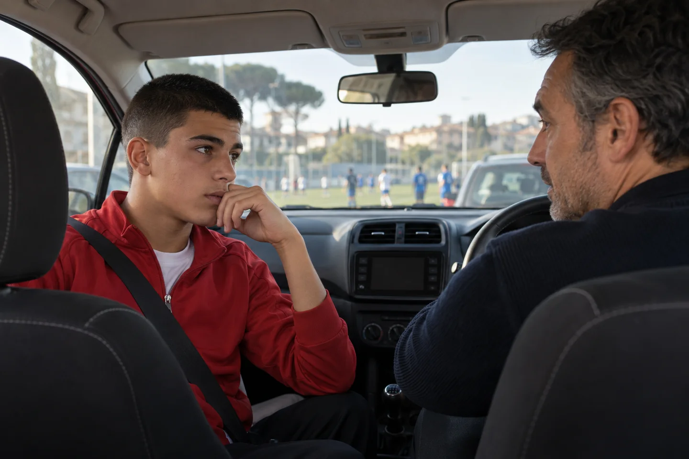
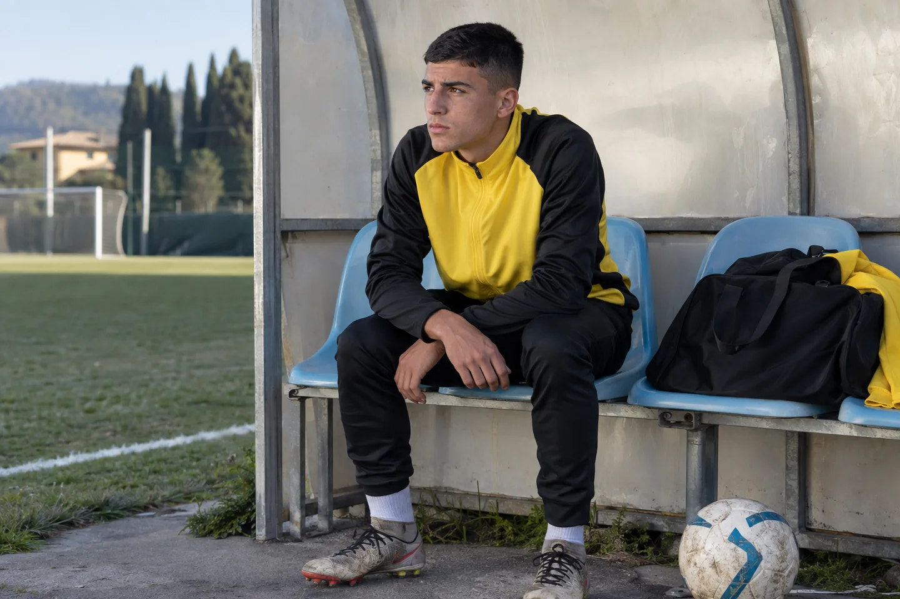
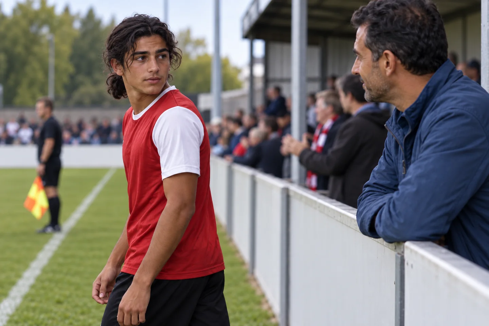
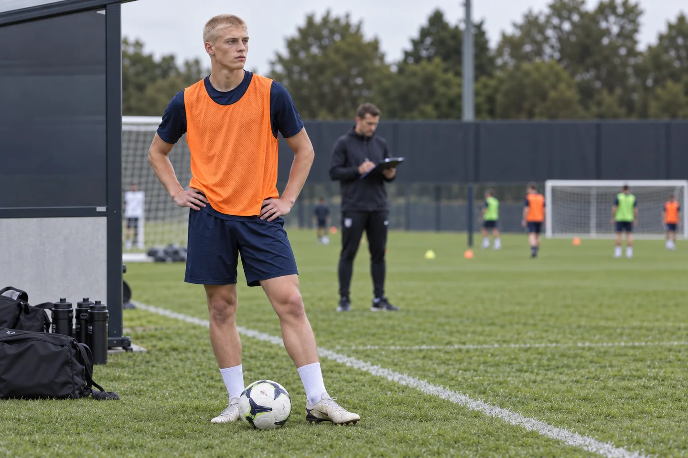
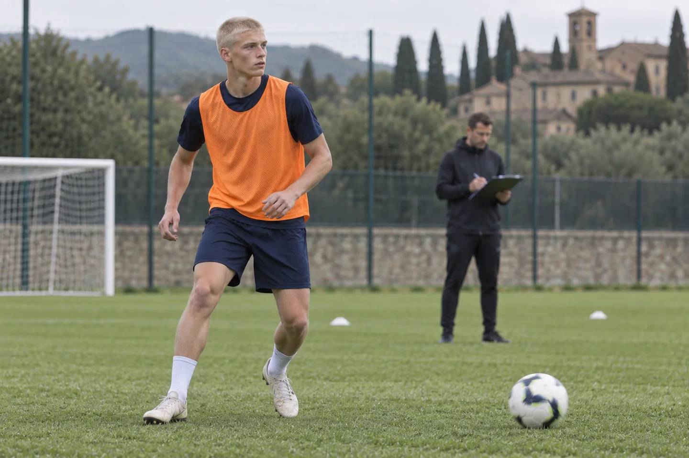
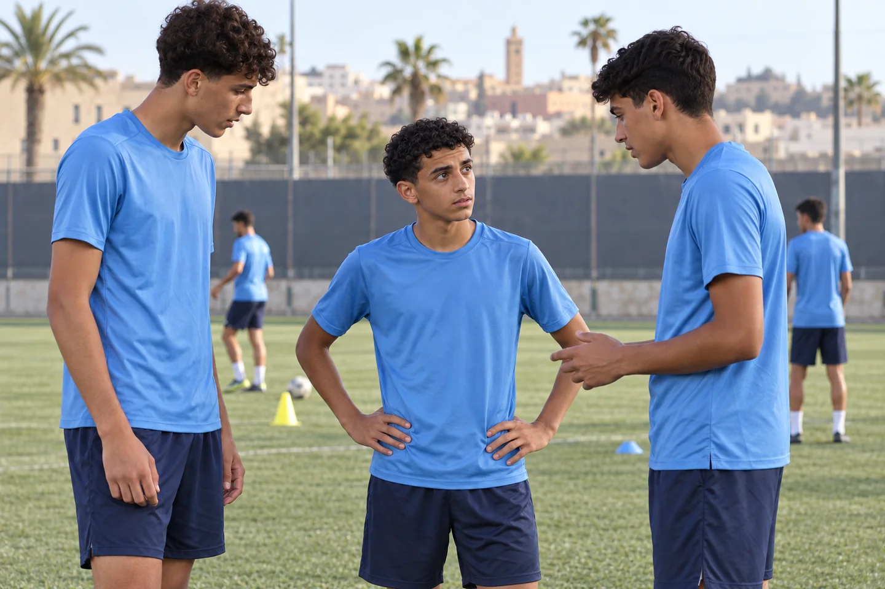
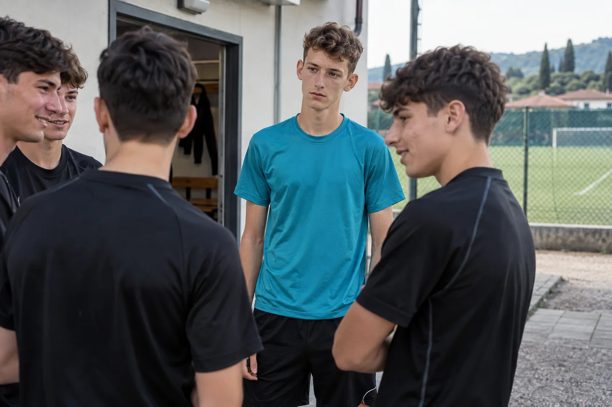

Dentro la partita
18 protagonisti distinti, 53 immagini. Prevalenza di ragazzi e famiglie europee; lo stesso protagonista accompagna le scene di ciascun advertorial, inclusa la storia di Emma nel calcio femminile.
Scene illustrative generate con AI. Tutti gli articoli sono pubblicati e accessibili senza registrazione.
Gli dici di stare tranquillo. Ma alla partita dopo succede di nuovo.
Leggi l’articolo pubblicato →
Incoraggiamenti a bordo campoParlare a casaConfronto e appunti
È arrivato nella squadra che voleva. Ora sembra aver perso fiducia.
Leggi l’articolo pubblicato →
L’arrivo nella nuova squadraUna richiesta sul campoRileggere l’esperienza
La partita è finita. In macchina, però, non sai più che cosa dirgli.
Leggi l’articolo pubblicato →

Il silenzio al ritornoTrovare il momento per parlareDare voce al proprio punto di vistaMio figlio gioca poco: restare, cambiare squadra o capire meglio che cosa succede?
Leggi l’articolo pubblicato →

Aspettare il proprio turnoAscoltare prima di deciderePartire da un episodioSi impegna ancora, ma il calcio non gli piace più come prima.
Leggi l’articolo pubblicato →
Quando il piacere cambiaAscoltare ciò che desideraChiarire gli obiettivi
L'infortunio lo ha fermato proprio quando stava trovando spazio.
Leggi l’articolo pubblicato →
La squadra continua ad allenarsiRestare vicini nell’attesaRaccontare l’esperienza
Si allena anche da solo. Perché in partita continua a trattenersi?
Leggi l’articolo pubblicato →
L’allenamento in piùDecidere mentre il gioco continuaCapire quale lavoro serve
Sbaglia un pallone. Poi sembra uscire dalla partita: che cosa succede dopo l’errore?
Leggi l’articolo pubblicato →
Dopo un pallone persoRitrovare la prossima azioneRicostruire una giocata
Mancano ore alla partita. Ma tuo figlio sembra già sotto esame.
Leggi l’articolo pubblicato →
L’attesa prima della partitaAnche la famiglia vive l’attesaPrepararsi partendo dagli episodi
Dalla tribuna vorresti aiutarlo. Ma lui come vive la tua presenza?
Leggi l’articolo pubblicato →

Uno sguardo verso la tribunaChiarire il sostegno che desideraIl significato delle reazioni esterneIl provino si avvicina. Come evitare che una giornata pesi quanto tutto il suo futuro.
Leggi l’articolo pubblicato →

Aspettare il provino
Concentrarsi sul compito di giocoParlarne con il genitoreGli altri sono cresciuti. Tuo figlio si sente rimasto indietro.
Leggi l’articolo pubblicato →

Il confronto con i compagniAscoltare il suo punto di vistaDare spazio al vissutoGli proponi un aiuto. Lui risponde: «Non mi serve». Da dove cominciare?
Leggi l’articolo pubblicato →
Quando la proposta incontra un rifiutoAscoltare la rispostaLasciare spazio alle sue domande
Nella nuova squadra non si sente parte del gruppo. Come capire che cosa sta vivendo.
Leggi l’articolo pubblicato →

Trovare il proprio posto nel gruppoRaccontare un episodioCapire quale sostegno cercareScuola, allenamenti, trasferte: quando tutta la settimana gira intorno al calcio.
Leggi l’articolo pubblicato →
Tra compiti e allenamentiAccordi condivisi in famigliaUn impegno sostenibile
La società non lo conferma. Come stargli vicino quando cambia il futuro che immaginava.
Leggi l’articolo pubblicato →
Quando cambia il futuro immaginatoAscoltare prima di scegliereValutare il passo successivo
Prima di investire in un mental coach per tuo figlio, guarda come si lavora davvero.
Leggi l’articolo pubblicato →
Valutare insieme il percorsoUn incontro individuale
Tua figlia ama il calcio. Ma in partita sembra dover dimostrare di meritarsi il campo.
Leggi l’articolo pubblicato →
Emma a bordo campo · scena illustrativa AIIl confronto con la madre · scena illustrativa AIEmma durante l’allenamento · scena illustrativa AI